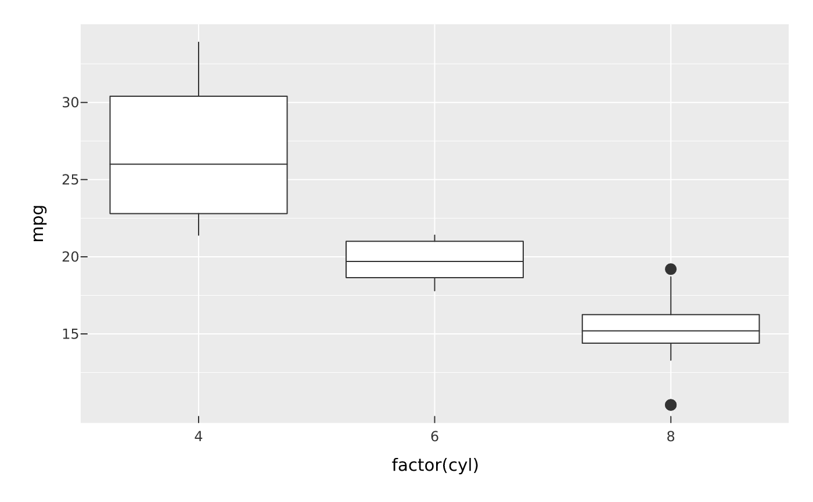
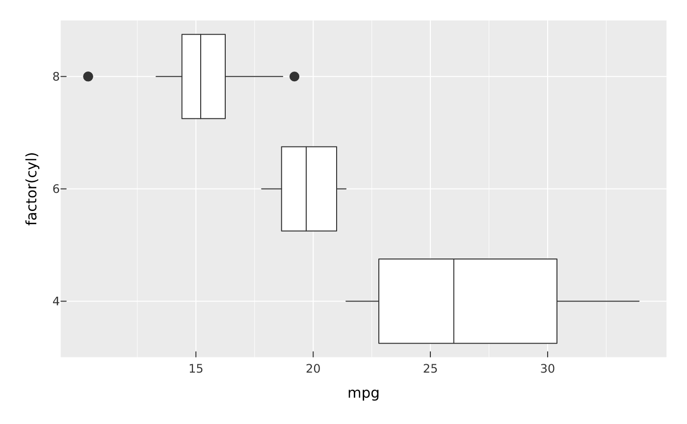
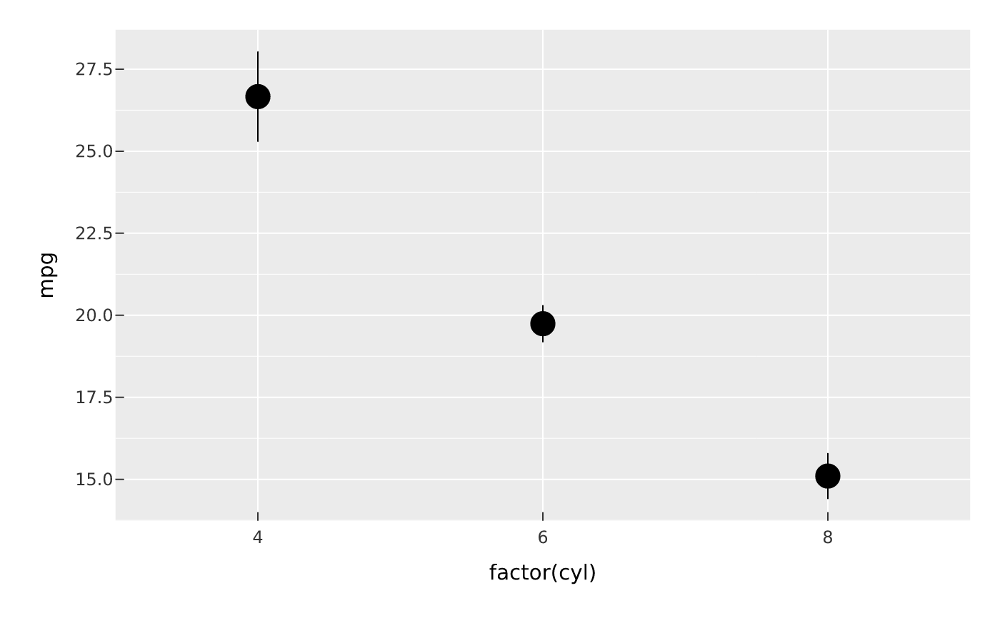
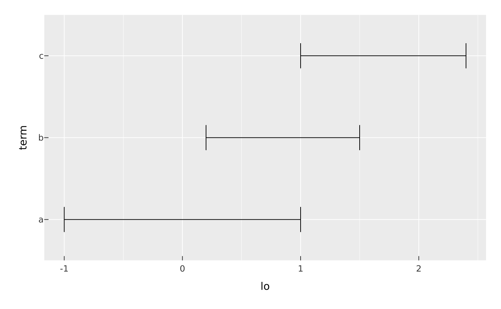

mark_boxplot() draws a box-and-whisker per x category from the raw y
values (box = Q1-Q3, median line, 1.5*IQR whiskers, outlier points).
mark_errorbar() draws vertical bars from ymin to ymax with horizontal
caps; mark_linerange() omits the caps. mark_summary() aggregates y per
x with fun (default mean) and draws the result as points; give it
fun.data (or fun.min / fun.max) and it draws each summary as a point
with a range instead, like ggplot2's stat_summary().
Usage
mark_boxplot(
plot,
...,
position = "identity",
orientation = NA,
blend = NULL,
sketch = NULL,
data = NULL
)
mark_errorbar(
plot,
...,
position = "identity",
orientation = NA,
width = NULL,
blend = NULL,
sketch = NULL,
data = NULL
)
mark_linerange(
plot,
...,
position = "identity",
orientation = NA,
blend = NULL,
sketch = NULL,
data = NULL
)
mark_summary(
plot,
...,
position = "identity",
fun = mean,
fun.data = NULL,
fun.min = NULL,
fun.max = NULL,
fun.args = list(),
blend = NULL,
sketch = NULL,
data = NULL
)
mark_pointrange(
plot,
...,
position = "identity",
orientation = NA,
blend = NULL,
sketch = NULL,
data = NULL
)
mark_crossbar(
plot,
...,
position = "identity",
width = NULL,
blend = NULL,
sketch = NULL,
data = NULL
)Arguments
- plot
- ...
Encodings (tidy-eval):
x,yfor boxplot/summary;x,ymin,ymax(ory,xmin,xmax) for errorbar/linerange; pluscolor/fill(andlinetypefor errorbar/linerange).- position
Position adjustment: a string —
"identity"(default),"nudge","stack","fill","dodge","dodge2","jitter","jitterdodge","sina"— or a parameterised position object such asposition_dodge()orposition_stack(). Every mark takes"identity"and"nudge"."stack"/"fill"work on bars, areas, points, text and labels (so a label can sit on its stacked bar);"dodge"/"dodge2"on bars, points, text, labels, error bars, line/point ranges, cross-bars, box plots, violins and slab-intervals (so error bars dodge over dodged bars);"jitter"on points, text and labels;"jitterdodge"and"sina"on points. A position a mark does not support is an error naming the ones it does.- orientation
For
mark_boxplot(),NA(default) to infer it from the data (horizontal whenyis discrete andxis not),"x"for vertical boxes along a discretex, or"y"for horizontal boxes alongy. Formark_errorbar(),mark_linerange()andmark_pointrange(),NA(default) draws horizontal ranges when the layer mapsxmin/xmaxand noymin/ymax(ggplot2'sgeom_errorbarh()), vertical ones otherwise;"x"/"y"force either.- blend
Optional blend mode for compositing this layer against what is already drawn beneath it (the panel and earlier layers), one of the CSS
mix-blend-modenames, e.g."multiply","screen","darken". The whole layer composites as one isolated group (not per element).- sketch
A
sketch()spec giving this layer a hand-drawn look (wobbly outlines, hachure fills),NA/FALSEto force it crisp (overriding a plot-widetheme_sketch()), orNULL(default) to inherit. Geometry marks accept it; text, raster, hex and datashade marks do not.- data
Optional layer data frame; overrides the plot data for this layer.
- width
For
mark_errorbar(), the cap width in data units, as formark_bar(width =)and ggplot2'sgeom_errorbar().NULL(default) is 90% of the band (the resolution on a continuous axis), the width of a default bar, so error bars over bars span them. Dodged error bars share it among the groups, as dodged bars do. Formark_crossbar(), the box width, the same way (VP-105).- fun
For
mark_summary(), the aggregation function (defaultmean). Withfun.min/fun.maxit gives the point of the range.- fun.data
For
mark_summary(), a summary giving a point and a range per category:"mean_se"(mean +/- one standard error),"mean_cl_normal"(mean with a t-based confidence interval),"mean_sdl"(mean +/- two standard deviations),"median_hilow"(median with the central 95% of the data), or a function of the values that returnsy,yminandymax(such as ggplot2'smean_se()). Overridesfun,fun.minandfun.max.- fun.min, fun.max
For
mark_summary(), functions giving the bottom and top of each category's range (e.g.fun.min = min, fun.max = max).- fun.args
For
mark_summary(), a list of extra arguments to the summary functions, e.g.list(mult = 2)for"mean_se"orlist(conf.int = 0.9)for"mean_cl_normal".
Value
The modified PlotSpec.
Details
A box plot is vertical when x is the discrete axis. When y is discrete
and x continuous (mark_boxplot(x = mpg, y = factor(cyl))) it is drawn
horizontally, as in ggplot2; orientation forces either.
Error bars and ranges are horizontal when they map xmin/xmax at each y
instead: mark_errorbar(y = g, xmin = lo, xmax = hi).
mark_pointrange() draws a point at (x, y) with a vertical line from ymin
to ymax (an identity mark — supply the summary values yourself, e.g. from a
model). mark_crossbar() draws a box spanning ymin..ymax with a
horizontal line at y. Both are the identity counterparts of the aggregating
mark_interval().
Examples
vplot(mtcars) |> mark_boxplot(x = factor(cyl), y = mpg)

# horizontal: the discrete variable on y
vplot(mtcars) |> mark_boxplot(x = mpg, y = factor(cyl))

# mean and standard error per category
vplot(mtcars) |> mark_summary(x = factor(cyl), y = mpg, fun.data = "mean_se")

# horizontal error bars
est <- data.frame(term = c("a", "b", "c"), lo = c(-1, 0.2, 1), hi = c(1, 1.5, 2.4))
vplot(est) |> mark_errorbar(y = term, xmin = lo, xmax = hi, width = 0.3)
